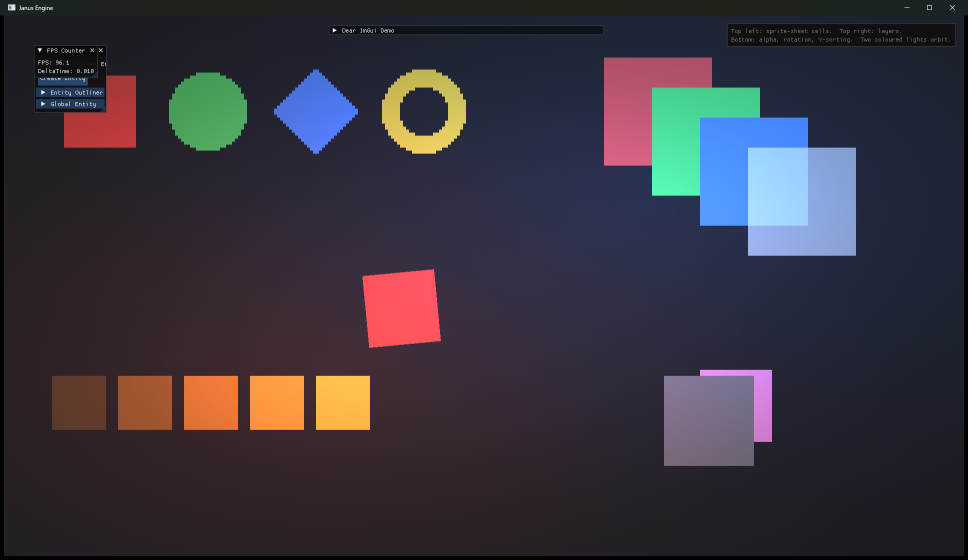

Loading...
Searching...
No Matches
Rendering
A tour of the renderer: sprite-sheet cells, the five layers, tint and transparency, rotation, Y-sorting and coloured lights.

Top left: four cells of one texture. Top right: one square per layer. Bottom: alpha steps, a rotating sprite, and two sprites sorted by Y. A red and a blue light orbit the middle.
A sprite sheet made in code
A 2 × 2 atlasexamples/modules/Rendering.cpp
// A 64x64 sprite sheet with four 32x32 cells: a red square, a green circle,
// a blue diamond and a yellow ring. Each cell's transparent pixels let the
// background show through.
static void RegisterAtlasTexture(const std::string& AssetPath) {
SDL_Surface* surface = SDL_CreateSurface(64, 64, SDL_PIXELFORMAT_ABGR8888);
const Uint32 transparent = SDL_MapSurfaceRGBA(surface, 0, 0, 0, 0);
SDL_FillSurfaceRect(surface, nullptr, transparent);
// Cell colours, in cell order: 0 1 on the top row, 2 3 on the bottom row
const SDL_Color colors[4] = {
{230, 80, 80, 255}, // red square
{90, 210, 110, 255}, // green circle
{90, 140, 240, 255}, // blue diamond
{240, 210, 80, 255}, // yellow ring
};
for (int y = 0; y < 64; ++y) {
for (int x = 0; x < 64; ++x) {
const int cell = (y / 32) * 2 + (x / 32);
const float dx = (x % 32) - 15.5f;
const float dy = (y % 32) - 15.5f;
const float distance = std::sqrt(dx * dx + dy * dy);
bool bFilled = false;
switch (cell) {
case 0: bFilled = std::abs(dx) < 12 && std::abs(dy) < 12; break;
case 1: bFilled = distance < 13.f; break;
case 2: bFilled = std::abs(dx) + std::abs(dy) < 15.f; break;
case 3: bFilled = distance < 14.f && distance > 8.f; break;
}
if (bFilled) {
const SDL_Color c = colors[cell];
SDL_WriteSurfacePixel(surface, x, y, c.r, c.g, c.b, c.a);
}
}
}
RegisterTexture(AssetPath, surface);
}
Drawing each cellexamples/modules/Rendering.cpp
// UVCoords is the top-left of the cell and WHCoords its size,
// both as fractions of the texture (0..1).
for (int cell = 0; cell < 4; ++cell) {
const glm::vec2 uv {(cell % 2) * 0.5f, (cell / 2) * 0.5f};
world.entity()
.set<FTransformComponent>({ .Location = {16.f + cell * 36.f, 16.f, 0.f} })
.set<FTexture2DComponent>({
.Sprite = {
.SpriteSheet = {"Atlas"},
.UVCoords = uv,
.WHCoords = {0.5f, 0.5f},
},
.TextureSize = {32.f, 32.f},
})
.set<FRenderingComponent>({ .RenderLayer = Renderer::Entities });
}
Layers
One square per layerexamples/modules/Rendering.cpp
// Layers are drawn in order: Background, Entities, Foreground, Debug, Overlay.
// Each square overlaps the previous one and is drawn on top of it.
const glm::vec2 square {36.f, 36.f};
const SDL_FColor red {0.9f, 0.35f, 0.35f, 1.f};
const SDL_FColor green {0.35f, 0.85f, 0.45f, 1.f};
const SDL_FColor blue {0.35f, 0.55f, 0.95f, 1.f};
const SDL_FColor white {1.f, 1.f, 1.f, 0.6f};
SpawnSprite(world, "White", {200.f, 14.f}, square, red, Renderer::Entities);
SpawnSprite(world, "White", {216.f, 24.f}, square, green, Renderer::Foreground);
SpawnSprite(world, "White", {232.f, 34.f}, square, blue, Renderer::Debug);
SpawnSprite(world, "White", {248.f, 44.f}, square, white, Renderer::Overlay);
Tint, alpha, rotation and sorting
Tint and alphaexamples/modules/Rendering.cpp
// Color multiplies the texture. Alpha below 1 is see-through.
for (int i = 0; i < 5; ++i) {
const SDL_FColor orange {1.f, 0.75f, 0.3f, 0.2f + i * 0.2f};
SpawnSprite(world, "White", {16.f + i * 22.f, 120.f}, {18.f, 18.f}, orange);
}
Rotationexamples/modules/Rendering.cpp
const SDL_FColor noTint {1.f, 1.f, 1.f, 1.f};
flecs::entity spinner =
SpawnSprite(world, "Atlas", {150.f, 112.f}, {32.f, 32.f}, noTint)
.set_name("Spinner");
// Show only the red square cell
spinner.get_mut<FTexture2DComponent>().Sprite.WHCoords = {0.5f, 0.5f};
world.system<FTransformComponent>("Spin")
.each([spinner](flecs::entity entity, FTransformComponent& transform) {
if (entity == spinner) {
// Radians per second
transform.Rotation.x += entity.world().delta_time();
}
});
Y-sortingexamples/modules/Rendering.cpp
// Within a layer, sprites lower on the screen (larger Y) are drawn on top.
// The bobbing square passes in front of and behind the fixed one.
const SDL_FColor grey {0.5f, 0.5f, 0.55f, 1.f};
const SDL_FColor pink {0.95f, 0.6f, 0.9f, 1.f};
SpawnSprite(world, "White", {220.f, 120.f}, {30.f, 30.f}, grey)
.set_name("Fixed");
flecs::entity bobber =
SpawnSprite(world, "White", {232.f, 110.f}, {24.f, 24.f}, pink)
.set_name("Bobber");
world.system<FTransformComponent>("Bob")
.each([bobber](flecs::entity entity, FTransformComponent& transform) {
if (entity == bobber) {
const float seconds = static_cast<float>(SDL_GetTicks()) / 1000.f;
transform.Location.y = 115.f + std::sin(seconds / 0.6f) * 22.f;
}
});
Camera and lights
A fill light and two coloured lightsexamples/modules/Rendering.cpp
// A fixed camera. Without at least one light the screen stays black.
world.entity("Camera")
.set<FTransformComponent>({})
.set<FCameraComponent>({
.CameraSize = {ScreenW, ScreenH},
.Boundaries = {0, 0, 0, 0},
});
// A soft light over the whole screen,
// plus two small coloured lights that orbit the middle.
world.entity("Fill light")
.set<FTransformComponent>({})
.set<FLightComponent>({ .Radius = 100.f, .Intensity = 1.2f });
world.entity("Red light")
.set<FTransformComponent>({})
.set<FLightComponent>({
.Radius = 0.35f,
.Intensity = 4.f,
.RGB = {1.f, 0.3f, 0.2f, 1.f},
})
.set<FOrbit>({ .Center = {160.f, 90.f}, .Radius = 70.f, .Speed = 0.8f });
world.entity("Blue light")
.set<FTransformComponent>({})
.set<FLightComponent>({
.Radius = 0.35f,
.Intensity = 4.f,
.RGB = {0.2f, 0.5f, 1.f, 1.f},
})
.set<FOrbit>({
.Center = {160.f, 90.f},
.Radius = 70.f,
.Speed = 0.8f,
.Angle = 3.14159f, // start on the opposite side
});
Full source
Rendering.cppexamples/modules/Rendering.cpp
// Module example: rendering.
//
// Shows:
// - the five render layers and the order they are drawn in
// - drawing part of a texture (a sprite-sheet cell) with UVCoords / WHCoords
// - tinting and transparency with FTexture2DComponent::Color
// - rotation (FTransformComponent::Rotation.x)
// - automatic depth sorting by Y within a layer
// - coloured lights that move
// Every texture is generated in code; no files are used.
#include <Module.hpp>
#include <Log/Module.hpp>
#include <Editor/Module.hpp>
#include <Filesystem/Module.hpp>
#include <Types/Graphics.hpp>
#include <Gameplay/ECS/Module.hpp>
#include <Gameplay/ECS/Modules/TransformModule.hpp>
#include <Gameplay/ECS/Modules/GraphicsModule.hpp>
#include <Rendering/Components/RenderingComponent.hpp>
#include <imgui.h>
#include <cmath>
#include <cstdlib>
// The engine's components (FTransformComponent, FTexture2DComponent, ...).
using namespace Components;
DECLARE_LOGGER(RenderDemo, debug)
constexpr float ScreenW = 320.f, ScreenH = 180.f;
namespace Components {
// Moves an entity in a circle around Center. Used for the lights.
DEFINE_COMPONENT(FOrbit,
ECS_MEMBER(glm::vec2, Center, glm::vec2(0, 0)),
ECS_MEMBER(float, Radius, 40.f),
ECS_MEMBER(float, Speed, 1.f),
ECS_MEMBER(float, Angle, 0.f))
}
// ---- Textures --------------------------------------------------------------------
static void RegisterTexture(const std::string& AssetPath, SDL_Surface* Surface) {
TObjectPtr<Graphics::STexture2D> texture;
texture->Surface = Surface;
texture->Width = static_cast<float>(Surface->w);
texture->Height = static_cast<float>(Surface->h);
texture->AssetPath = AssetPath;
TObjectPtr<Filesystem::SAssetData> assetData;
assetData->AssetPath = AssetPath;
assetData->AssetName = AssetPath;
assetData->AssetType = Filesystem::TEXTURE;
assetData->ObjectData = texture;
Filesystem::RegisterAssetData(assetData);
}
static void RegisterSolidTexture(const std::string& AssetPath, int Size) {
SDL_Surface* surface = SDL_CreateSurface(Size, Size, SDL_PIXELFORMAT_ABGR8888);
const Uint32 white = SDL_MapSurfaceRGBA(surface, 255, 255, 255, 255);
SDL_FillSurfaceRect(surface, nullptr, white);
RegisterTexture(AssetPath, surface);
}
// A 64x64 sprite sheet with four 32x32 cells: a red square, a green circle,
// a blue diamond and a yellow ring. Each cell's transparent pixels let the
// background show through.
static void RegisterAtlasTexture(const std::string& AssetPath) {
SDL_Surface* surface = SDL_CreateSurface(64, 64, SDL_PIXELFORMAT_ABGR8888);
const Uint32 transparent = SDL_MapSurfaceRGBA(surface, 0, 0, 0, 0);
SDL_FillSurfaceRect(surface, nullptr, transparent);
// Cell colours, in cell order: 0 1 on the top row, 2 3 on the bottom row
const SDL_Color colors[4] = {
{230, 80, 80, 255}, // red square
{90, 210, 110, 255}, // green circle
{90, 140, 240, 255}, // blue diamond
{240, 210, 80, 255}, // yellow ring
};
for (int y = 0; y < 64; ++y) {
for (int x = 0; x < 64; ++x) {
const int cell = (y / 32) * 2 + (x / 32);
const float dx = (x % 32) - 15.5f;
const float dy = (y % 32) - 15.5f;
const float distance = std::sqrt(dx * dx + dy * dy);
bool bFilled = false;
switch (cell) {
case 0: bFilled = std::abs(dx) < 12 && std::abs(dy) < 12; break;
case 1: bFilled = distance < 13.f; break;
case 2: bFilled = std::abs(dx) + std::abs(dy) < 15.f; break;
case 3: bFilled = distance < 14.f && distance > 8.f; break;
}
if (bFilled) {
const SDL_Color c = colors[cell];
SDL_WriteSurfacePixel(surface, x, y, c.r, c.g, c.b, c.a);
}
}
}
RegisterTexture(AssetPath, surface);
}
// ---- Scene --------------------------------------------------------------------------
glm::vec2 Position, glm::vec2 Size, SDL_FColor Color,
Renderer::EInstanceLayer Layer = Renderer::Entities) {
return World.entity()
.set<FTransformComponent>({ .Location = {Position.x, Position.y, 0.f} })
.set<FTexture2DComponent>({
.Sprite = { .SpriteSheet = {Texture} },
.TextureSize = Size,
.Color = Color,
})
.set<FRenderingComponent>({ .RenderLayer = Layer });
}
protected:
void Draw_Internal() override {
ImGui::SetWindowCollapsed("Dear ImGui Demo", true, ImGuiCond_Once);
const ImGuiViewport* viewport = ImGui::GetMainViewport();
const ImVec2 topRight {viewport->Pos.x + viewport->Size.x - 16.f,
viewport->Pos.y + 16.f};
ImGui::SetNextWindowPos(topRight, ImGuiCond_Always, {1.f, 0.f});
const ImGuiWindowFlags flags = ImGuiWindowFlags_NoDecoration
| ImGuiWindowFlags_AlwaysAutoResize
| ImGuiWindowFlags_NoInputs;
ImGui::Begin("Rendering", nullptr, flags);
ImGui::TextDisabled("Top left: sprite-sheet cells. Top right: layers.");
ImGui::TextDisabled("Bottom: alpha, rotation, Y-sorting.");
ImGui::TextDisabled("Two coloured lights orbit the middle.");
ImGui::End();
}
};
int main() {
RegisterSolidTexture("CollisionTexture", 8);
RegisterSolidTexture("White", 8);
RegisterAtlasTexture("Atlas");
flecs::world& world = ECS::GetWorld();
ECS_REGISTER_COMPONENT(FOrbit, world);
// A fixed camera. Without at least one light the screen stays black.
world.entity("Camera")
.set<FTransformComponent>({})
.set<FCameraComponent>({
.CameraSize = {ScreenW, ScreenH},
.Boundaries = {0, 0, 0, 0},
});
// A soft light over the whole screen,
// plus two small coloured lights that orbit the middle.
world.entity("Fill light")
.set<FTransformComponent>({})
.set<FLightComponent>({ .Radius = 100.f, .Intensity = 1.2f });
world.entity("Red light")
.set<FTransformComponent>({})
.set<FLightComponent>({
.Radius = 0.35f,
.Intensity = 4.f,
.RGB = {1.f, 0.3f, 0.2f, 1.f},
})
.set<FOrbit>({ .Center = {160.f, 90.f}, .Radius = 70.f, .Speed = 0.8f });
world.entity("Blue light")
.set<FTransformComponent>({})
.set<FLightComponent>({
.Radius = 0.35f,
.Intensity = 4.f,
.RGB = {0.2f, 0.5f, 1.f, 1.f},
})
.set<FOrbit>({
.Center = {160.f, 90.f},
.Radius = 70.f,
.Speed = 0.8f,
.Angle = 3.14159f, // start on the opposite side
});
// The Background layer clears the screen every frame,
// so it needs a sprite that covers it.
const SDL_FColor backgroundColor {0.16f, 0.17f, 0.2f, 1.f};
SpawnSprite(world, "White", {0, 0}, {ScreenW, ScreenH}, backgroundColor,
.set_name("Background");
// UVCoords is the top-left of the cell and WHCoords its size,
// both as fractions of the texture (0..1).
for (int cell = 0; cell < 4; ++cell) {
const glm::vec2 uv {(cell % 2) * 0.5f, (cell / 2) * 0.5f};
world.entity()
.set<FTransformComponent>({ .Location = {16.f + cell * 36.f, 16.f, 0.f} })
.set<FTexture2DComponent>({
.Sprite = {
.SpriteSheet = {"Atlas"},
.UVCoords = uv,
.WHCoords = {0.5f, 0.5f},
},
.TextureSize = {32.f, 32.f},
})
.set<FRenderingComponent>({ .RenderLayer = Renderer::Entities });
}
// Layers are drawn in order: Background, Entities, Foreground, Debug, Overlay.
// Each square overlaps the previous one and is drawn on top of it.
const glm::vec2 square {36.f, 36.f};
const SDL_FColor red {0.9f, 0.35f, 0.35f, 1.f};
const SDL_FColor green {0.35f, 0.85f, 0.45f, 1.f};
const SDL_FColor blue {0.35f, 0.55f, 0.95f, 1.f};
const SDL_FColor white {1.f, 1.f, 1.f, 0.6f};
SpawnSprite(world, "White", {200.f, 14.f}, square, red, Renderer::Entities);
SpawnSprite(world, "White", {216.f, 24.f}, square, green, Renderer::Foreground);
SpawnSprite(world, "White", {232.f, 34.f}, square, blue, Renderer::Debug);
SpawnSprite(world, "White", {248.f, 44.f}, square, white, Renderer::Overlay);
// Color multiplies the texture. Alpha below 1 is see-through.
for (int i = 0; i < 5; ++i) {
const SDL_FColor orange {1.f, 0.75f, 0.3f, 0.2f + i * 0.2f};
SpawnSprite(world, "White", {16.f + i * 22.f, 120.f}, {18.f, 18.f}, orange);
}
const SDL_FColor noTint {1.f, 1.f, 1.f, 1.f};
flecs::entity spinner =
SpawnSprite(world, "Atlas", {150.f, 112.f}, {32.f, 32.f}, noTint)
.set_name("Spinner");
// Show only the red square cell
spinner.get_mut<FTexture2DComponent>().Sprite.WHCoords = {0.5f, 0.5f};
world.system<FTransformComponent>("Spin")
.each([spinner](flecs::entity entity, FTransformComponent& transform) {
if (entity == spinner) {
// Radians per second
transform.Rotation.x += entity.world().delta_time();
}
});
// Within a layer, sprites lower on the screen (larger Y) are drawn on top.
// The bobbing square passes in front of and behind the fixed one.
const SDL_FColor grey {0.5f, 0.5f, 0.55f, 1.f};
const SDL_FColor pink {0.95f, 0.6f, 0.9f, 1.f};
SpawnSprite(world, "White", {220.f, 120.f}, {30.f, 30.f}, grey)
.set_name("Fixed");
flecs::entity bobber =
SpawnSprite(world, "White", {232.f, 110.f}, {24.f, 24.f}, pink)
.set_name("Bobber");
world.system<FTransformComponent>("Bob")
.each([bobber](flecs::entity entity, FTransformComponent& transform) {
if (entity == bobber) {
const float seconds = static_cast<float>(SDL_GetTicks()) / 1000.f;
transform.Location.y = 115.f + std::sin(seconds / 0.6f) * 22.f;
}
});
world.system<FTransformComponent, FOrbit>("Orbit")
.each([](flecs::iter& it, size_t, FTransformComponent& transform,
FOrbit& orbit) {
orbit.Angle += orbit.Speed * it.delta_time();
const float x = std::cos(orbit.Angle) * orbit.Radius;
const float y = std::sin(orbit.Angle) * orbit.Radius * 0.6f;
transform.Location.x = orbit.Center.x + x;
transform.Location.y = orbit.Center.y + y;
});
Log::RenderDemo::Info("Close the window to quit.");
Engine::Run();
// Known issue: avoid the crash in static destructors after teardown.
std::quick_exit(0);
}
#define ECS_MEMBER(MemberType, MemberName, DefaultValue)
One field of a component: its type, name and default value.
Definition Components.hpp:61
#define ECS_REGISTER_COMPONENT(ComponentName, World)
Registers a DEFINE_COMPONENT component with World: its reflection data and its Entity Debugger panel.
Definition Components.hpp:54
#define DEFINE_COMPONENT(ComponentName,...)
Defines struct Components::ComponentName with the given ECS_MEMBER fields, its reflection data,...
Definition Components.hpp:88
TObjectPtr< TEditorTool > Open()
Opens the tool of type TEditorTool, creating and registering it the first time.
Definition Module.hpp:25
void InitializePlugins()
Starts SDL and every engine module that needs starting, in dependency order, and opens the game windo...
void TeardownPlugins()
Shuts the engine modules down in reverse order and calls SDL_Quit().
void Run()
Runs the game loop until the window is closed: input, ECS systems, editor tools, rendering.
void RegisterAssetData(const TObjectPtr< SAssetData > &AssetData)
Adds an asset to the registry under AssetData->AssetPath.
#define DECLARE_LOGGER(Namespace, InLogLevel)
Same as DECLARE_LOGGER_WITH_PARAMS with LOG_ALL outputs and the shared JanusEngine log file.
Definition Module.hpp:41
EInstanceLayer
The render layers, drawn in this order.
Definition SpriteInstanceContainer.hpp:16
Definition World.hpp:20
What a sprite draws: Graphics::SSprite Sprite (texture path and cell), glm::vec2 TextureSize (32 × 32...
Definition RenderingComponent.hpp:19
Where an entity is: glm::vec3 Location, glm::vec3 Rotation, glm::vec3 Scale.
Definition TransformModule.hpp:20